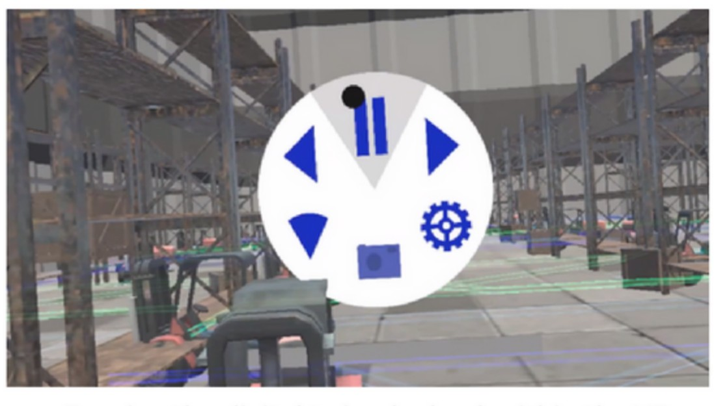
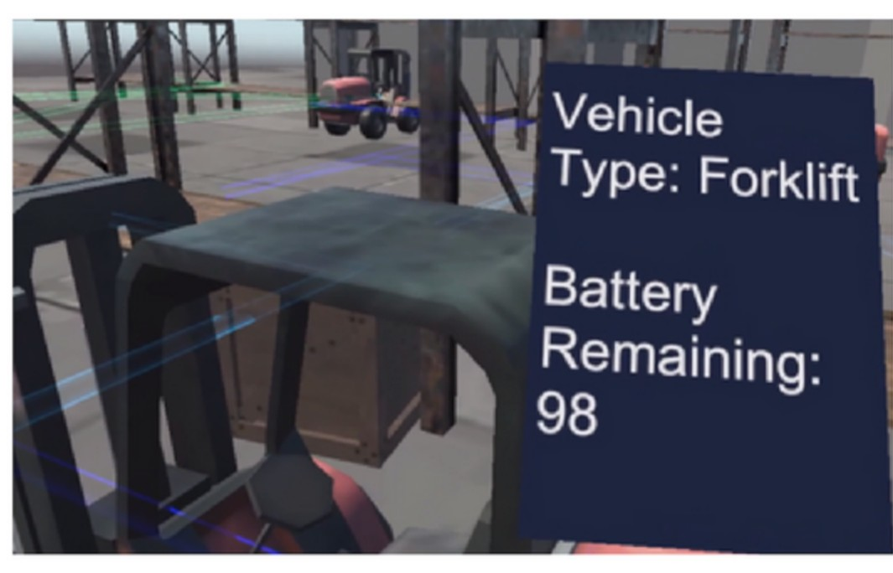
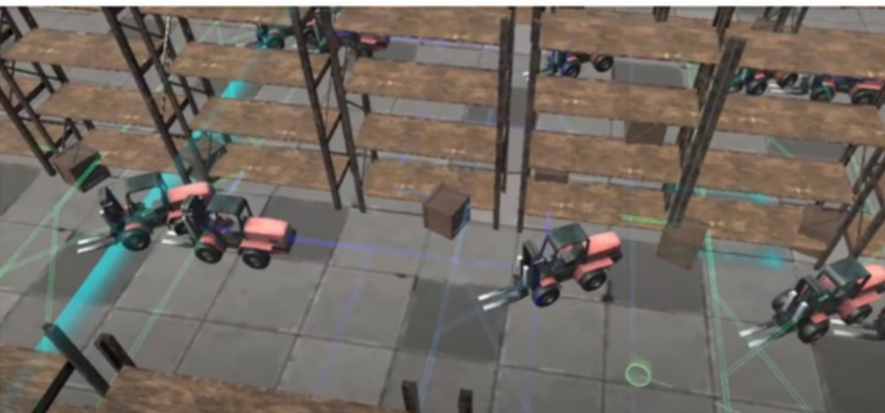
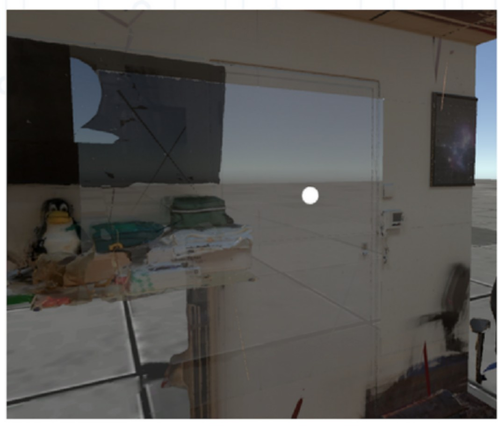
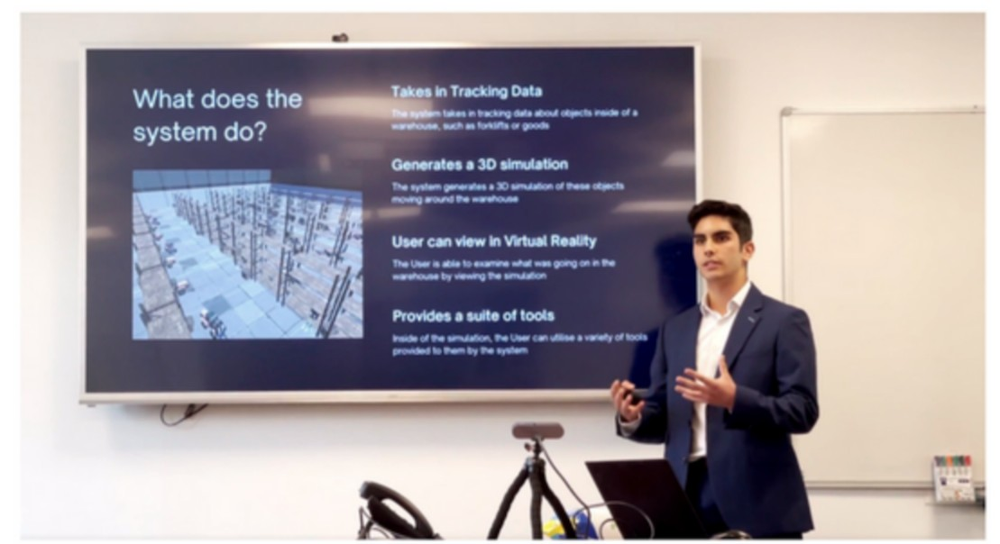

The problem
How much a warehouse can move in a day is limited by how it is arranged. When several warehouse vehicles need the same aisle or the same stretch of floor at the same time, queues form. The cost of that congestion is real but hard to see: it is spread in thirty-second increments across a whole shift, so it shows up in the totals at the end of the month rather than anywhere a manager can point at.
What I built
VRDT reconstructs a real warehouse as a 3D environment from laser scans and photography, then replays the recorded movement of its vehicles and goods through that environment. A manager puts on a headset, stands inside a copy of their own warehouse, and watches a shift play back, pausing it, slowing it down and walking into the aisles to see where the queues actually form.

Key capabilities
- Twin generation from location data, photography and laser scans.
- Playback control: play, pause, fast-forward and slow down the recording, so a manager can skim a quiet hour and then crawl through the minute where a queue forms.
- Grab-to-zoom: squeeze the controller and pull upwards or downwards to scale the whole warehouse, moving between standing in an aisle and looking down on the entire floor plan.
- Teleport-based locomotion, chosen over smooth movement specifically to reduce motion sickness in users who would not be regular VR users.
- Object inspection: placing your hand on a vehicle or a pallet reveals its details.



How it was built
I started by consulting professionals working in logistics to establish what a warehouse manager would actually need from a tool like this, rather than designing to what was easiest to render.
The application itself is written in C# in the Unity engine. Python handles the location data: creating it, editing it and reshaping it for testing. The environment comes from the company's existing 3D scan pipeline, which I connected the system to with colleagues who owned that pipeline.

Engineering challenges
Location data is sampled, movement is continuous. Positions are recorded at discrete intervals, so replaying them literally makes every vehicle teleport from sample to sample. I built interpolation between the recorded points, which turns a sequence of positions into continuous motion and makes it possible to scrub playback to any moment rather than only to a recorded sample.
No real location data existed while I was building. The sensor pipeline that would eventually feed VRDT did not exist yet, so I wrote a Python tool to generate and edit synthetic location data. That unblocked development entirely, and it also turned out to be the better testing story: I could author the exact scenario I wanted (two vehicles converging on one aisle, a dropped sample, an implausibly fast movement) and reproduce it on demand, which recorded data would not have let me do.
Where it got to
I presented VRDT to the digital division once the first prototype worked, and then to the Chief Executive Officer and Chief Digital Officer, who asked me to prepare pilot trials in two of the client warehouses the company operated.

The planned next steps were to work with the company's Sensors team on a pipeline for collecting real location data, to run the pilot against that real data, and then to integrate the system with the company's warehouses properly.